To customize how maps are displayed in the QueryViewer control, you have to associate a class with it (below the Appearance group):
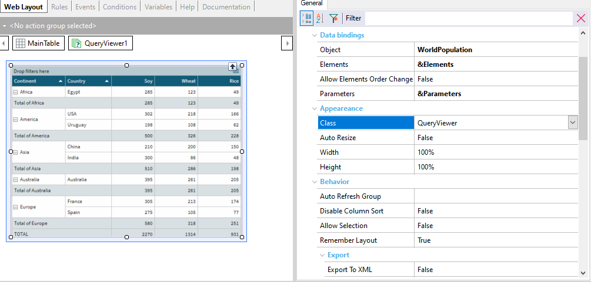
Next, open the associated Web Theme object:
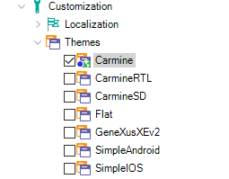
And select the class that matches the class associated with the QueryViewer control:
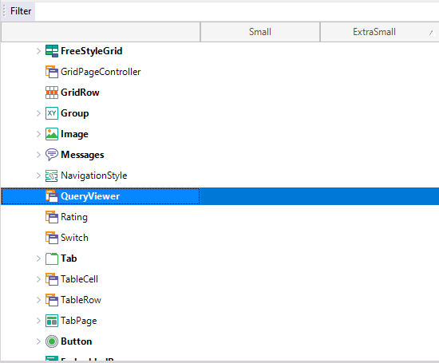
Below the Map Specific group, you will find the properties that allow you to configure the desired user interface for the map:
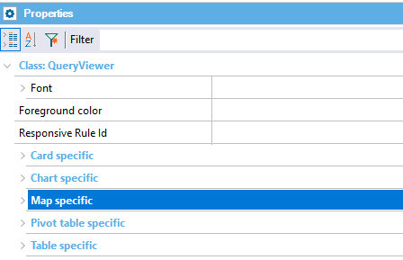
For example, you will see the Selection Color property and several groups of properties:
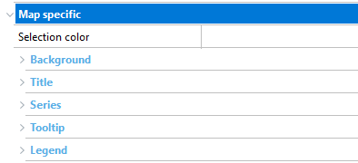
- Selection Color property: Allows you to change the color of the selected area.
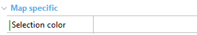
Example: If you define the Selection Color property as follows:
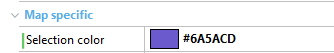
The map will be displayed as shown below:
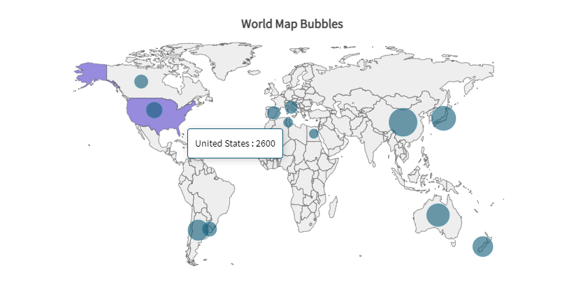
- Background group: Provides the Color and Opacity properties of the map’s background.
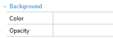
Example: If you make these configurations:
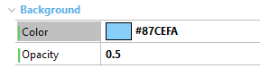
The map will be displayed as shown below:
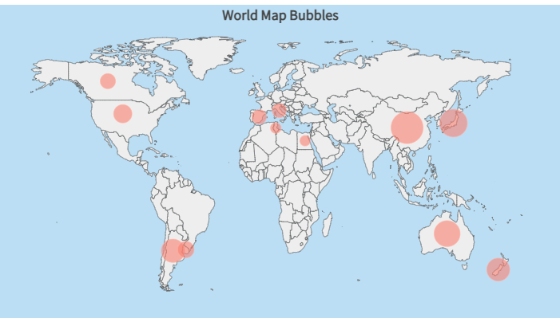
- Title group: Below Font, the following properties are available:
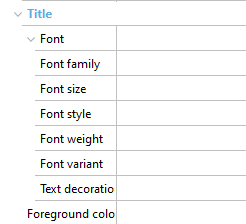
Example: If you define the properties of the Title group as follows:
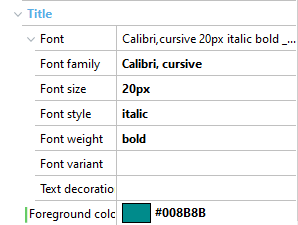
The map will be displayed as shown below:
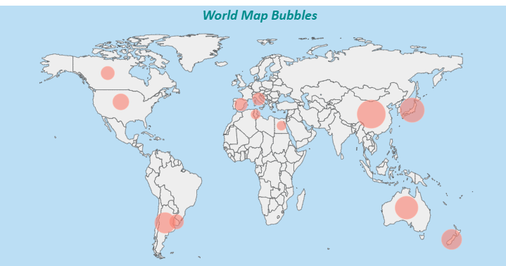
- Series group:
- The Box subgroup allows you to modify the Color, Opacity, Border color, and Border width properties of the box that will contain the label of the defined series.
- The Text subgroup allows you to modify the properties related to the fonts of these labels. Properties include Font, Font Family, Font size, Font style, and Font weight. You can also modify the Foreground color property that allows you to change the color of the label text.
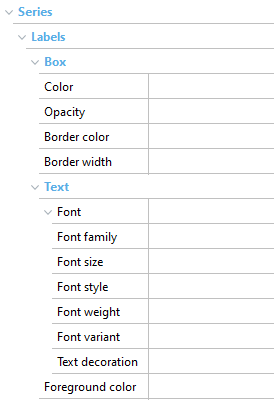
Example: If you define the Series group as follows:
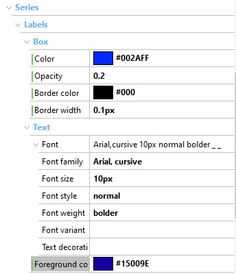
The map will be displayed as shown below:
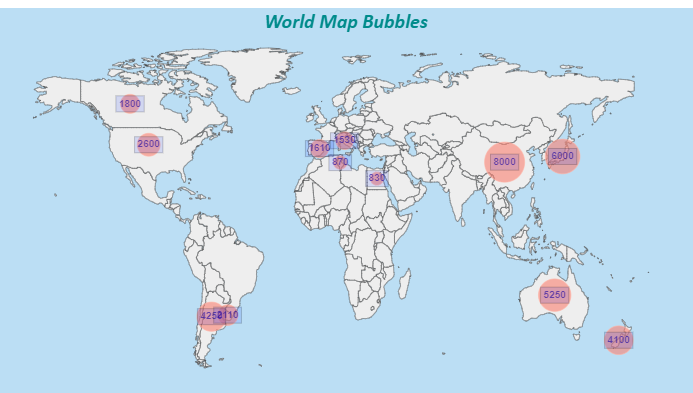
- Tooltip group:
- The Box subgroup allows you to modify the properties of the box that will contain the defined tooltip.
- The Text subgroup allows you to modify the properties related to the tooltip fonts. The properties you can configure include Font, Font Family, Font size, Font style, and Font weight. In addition, within this subgroup you can also modify the Foreground color property that allows you to change the color of the tooltip text.
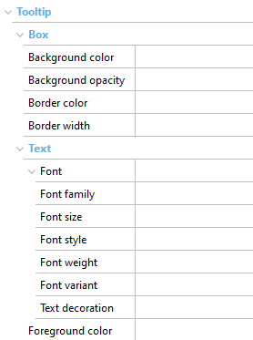
Example: If you define the Tooltip subcategory as follows:
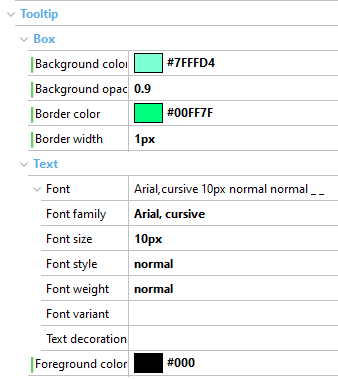
The map’s tooltip will be displayed as shown below:
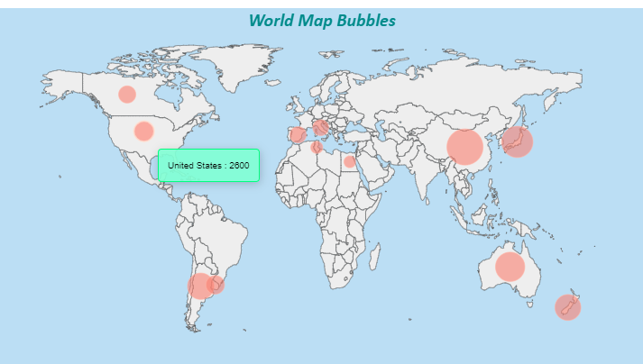
- Legend group:
- The Box group allows you to modify the properties of the box that will contain the corresponding map legend.
- The Text subgroup allows you to modify the properties related to the legend fonts. Among the properties in this group are: Font, Font Family, Font size, Font style, and Font weight. You can also modify the Foreground color property that allows you to change the color of the legend text.
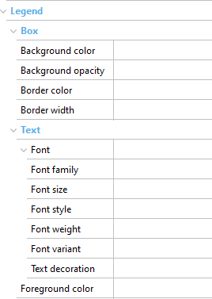
Example: If you define the Legend subcategory as follows:
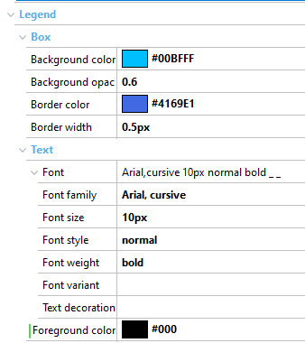
The maps’s legend will be displayed as shown below:
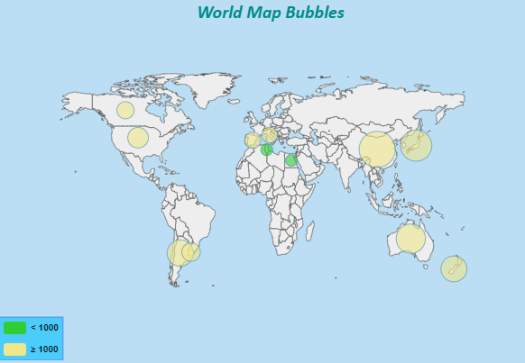
Availability
This customization in Maps is available since GeneXus 17 upgrade 5.